A book for these days.
Asympta Paperie brings native handwriting, small keepsakes and original crayon stationery into a quiet, finite notebook for iPhone and iPad. A sewn kraft cover opens around its spine on a warm-white tabletop. One physical orange button reveals a line of handwritten tools.
Version 1.0 (37) · Availability verified in the existing Internal TestFlight group. The developer will review this build before submitting the App Store version and Lifetime purchase. This page does not represent an App Store launch. This is a beta for device review; full regression qualification remains open. A known Single-to-Duo rotation issue can leave live ink invisible in iOS 27 Simulator; device confirmation is pending.
New books follow their chosen Gregorian year: 365 pages, or 366 in a leap year, including the final leaf. The last leaf is plain, with a faint prompt; turning it reveals the inner back cover. Memory Between Pages lets you tuck a ticket, receipt, photo, note or pressed flower into a gap, then tap its corner to unfold it. Earlier notebooks keep their content.
Graphite, ink, ballpoint and fountain tools use native PencilKit. Tap Write to use a finger immediately on iPhone; iPad starts with Apple Pencil. An explicitly chosen input is remembered. Portrait iPhone fits one complete 7:10 leaf with a narrow inner glimpse of adjoining paper; landscape iPad and Duo-enabled iPhone open a spread that fills the available width. Saved content fits uniformly inside the paper margins across device proportions. The outside board edge and sewn inner gutter follow the selected leaf. Paper blocks accumulate on the left and diminish on the right as pages turn. Original patterned washi tape can be placed on pages or a cover. Earlier ink keeps its exact saved geometry as additional writable paper is made available. English and Traditional Chinese are available. Writing works offline, and available signed-in iCloud accounts sync through their private CloudKit database. Two notebooks are free; the optional one-time Lifetime purchase unlocks unlimited notebooks. No Paperie account is required.
Real iPhone screenshots


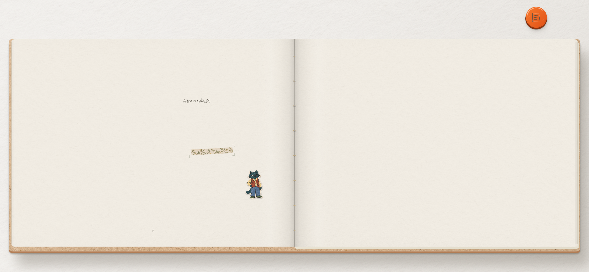

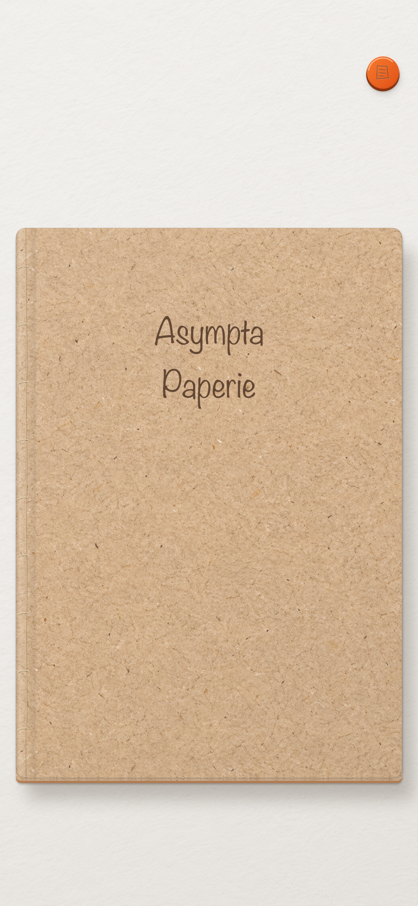

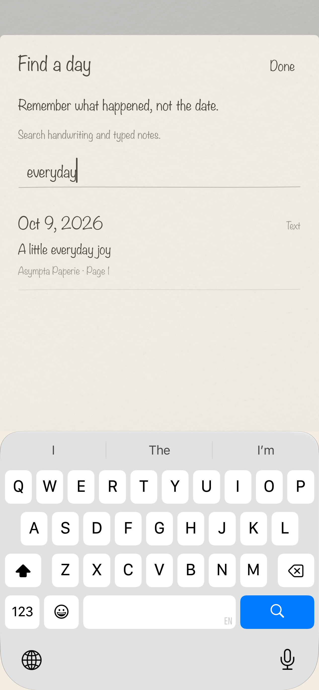

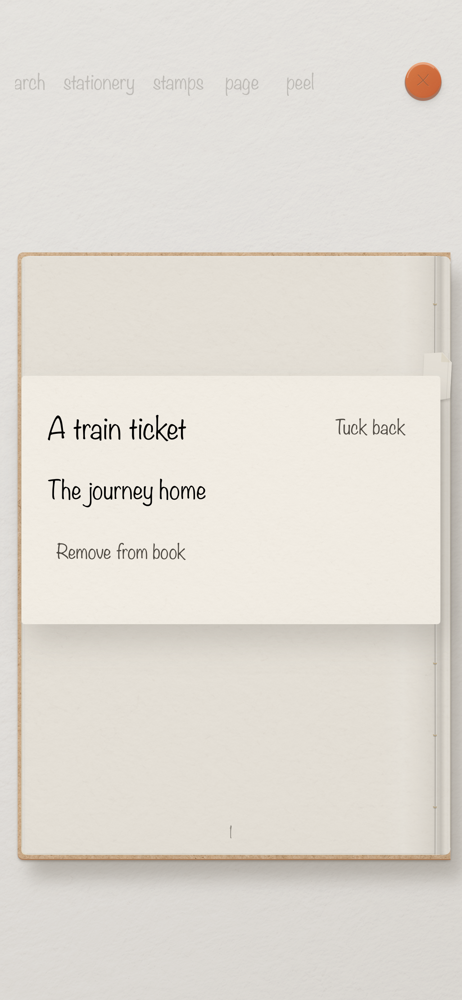

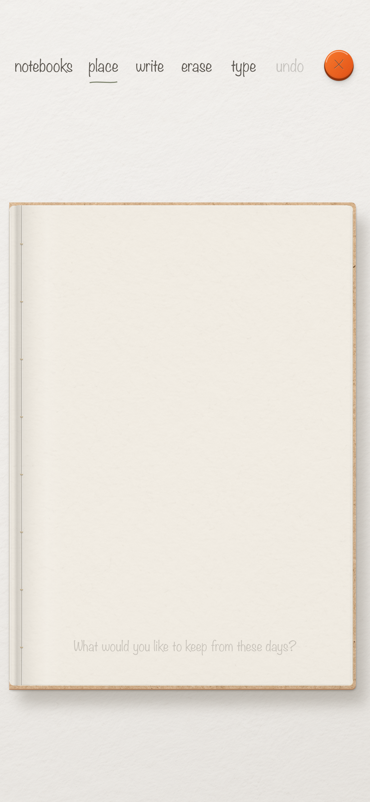

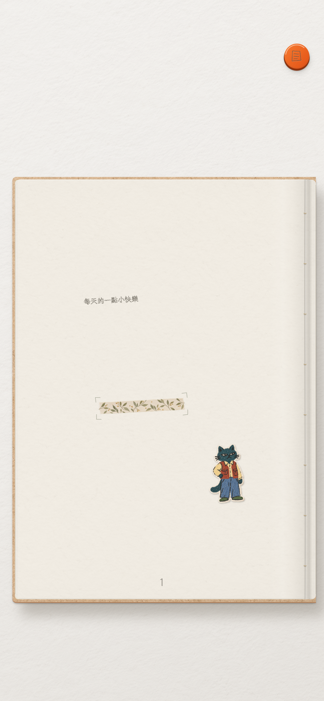


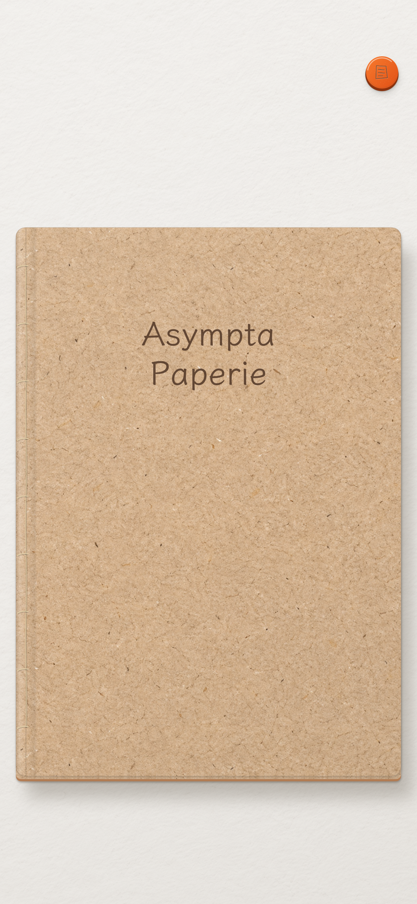

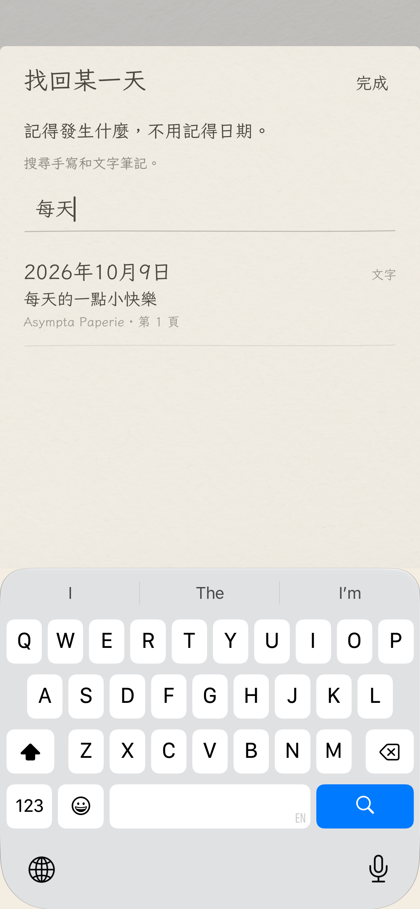
Real iPad screenshots

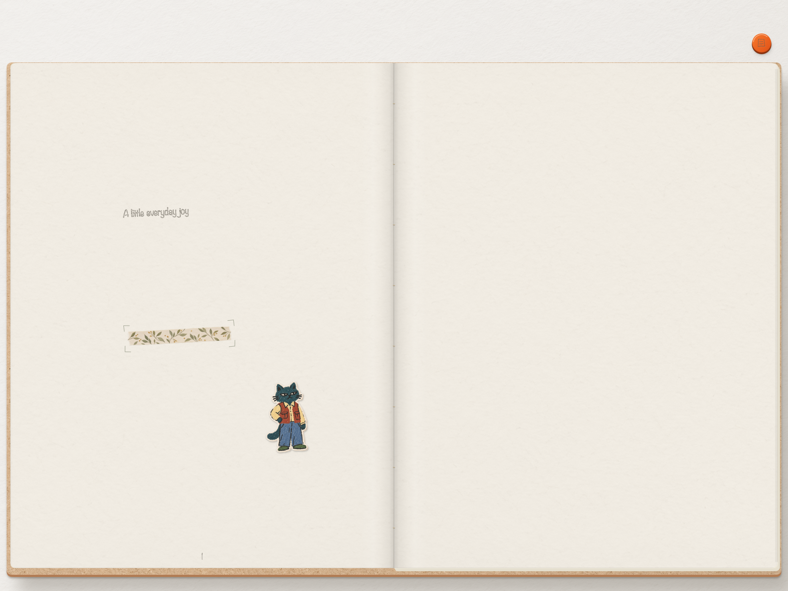

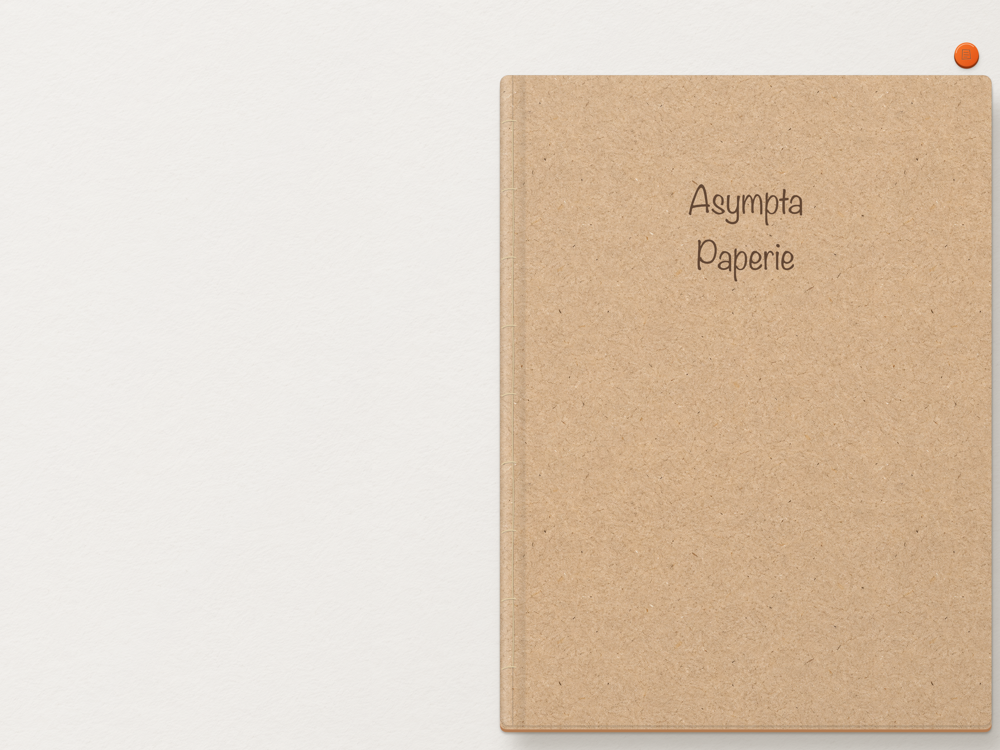


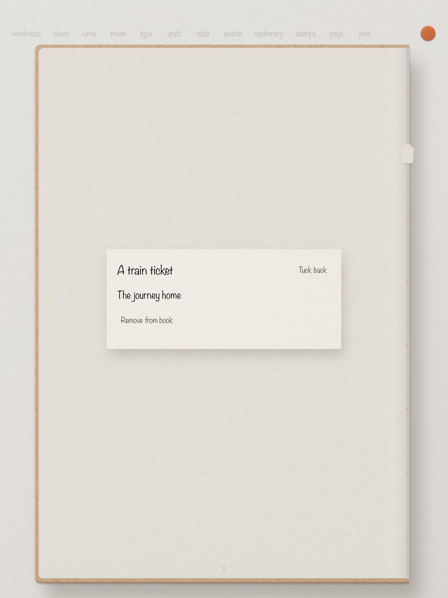

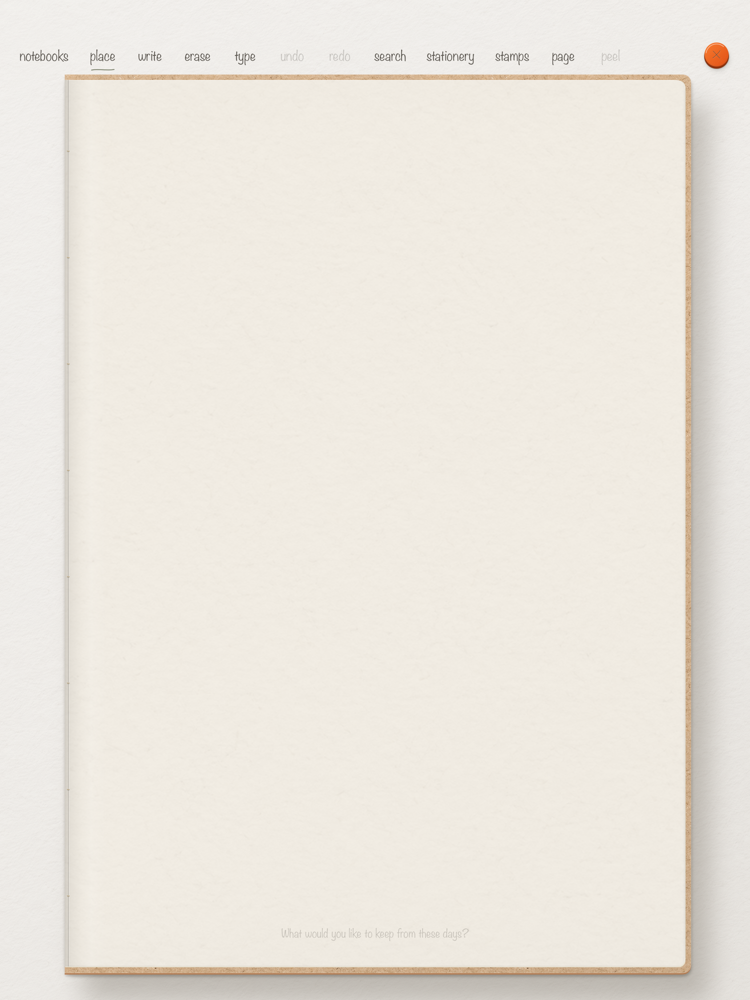


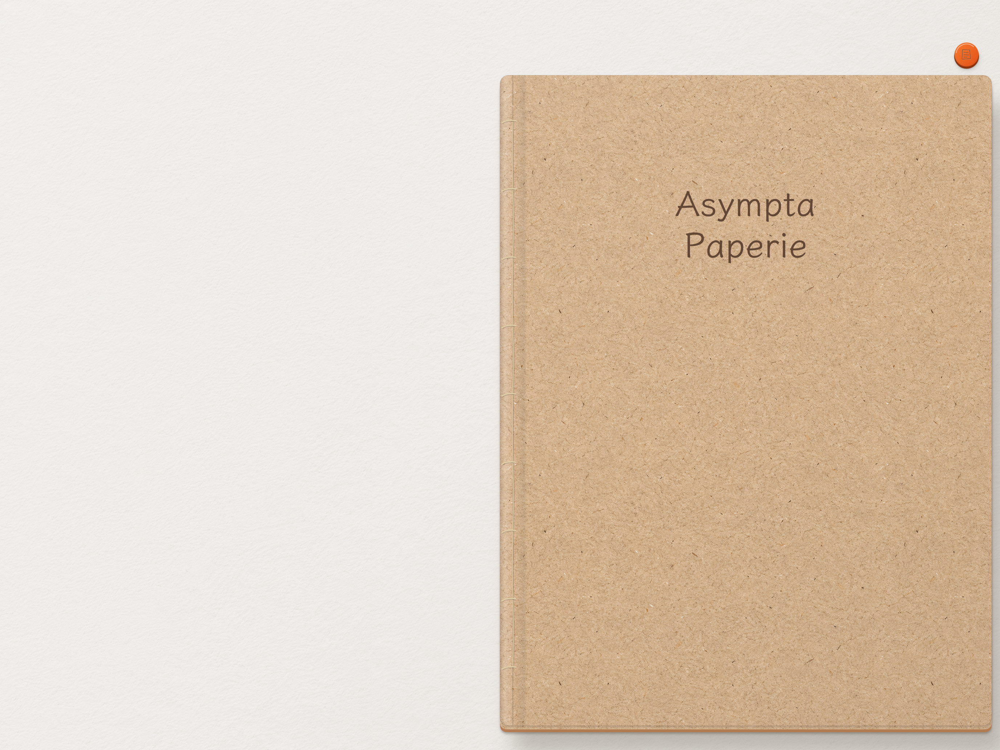

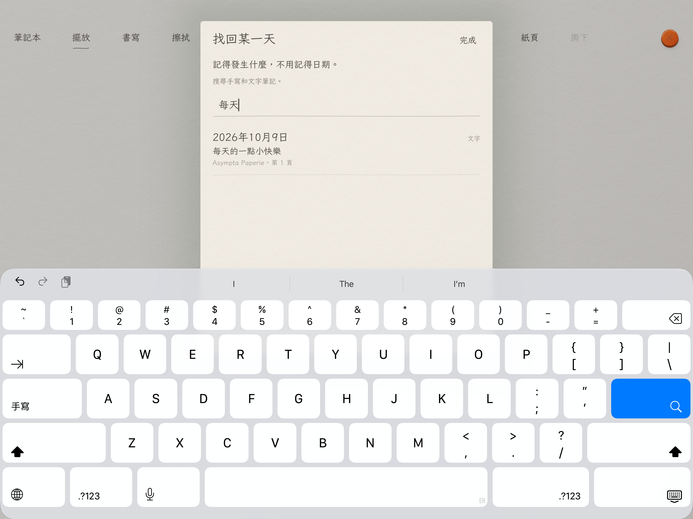
Header and Search Results artwork
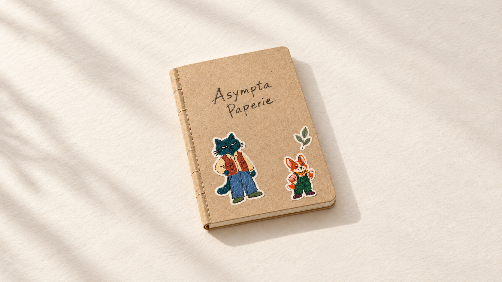
All app images above are actual Build 37 simulator captures from the verified source. Only orientation and opaque PNG export were normalized. The final-leaf capture uses a four-page test fixture to reach the real ending efficiently; production books have 365 or 366 pages for their chosen year. Simulator results do not prove hardware Pencil feel or live cross-device iCloud behavior.
Screenshot provenance · Build provenance · hello@everformlab.com
© 2026 Ka Ho Lau